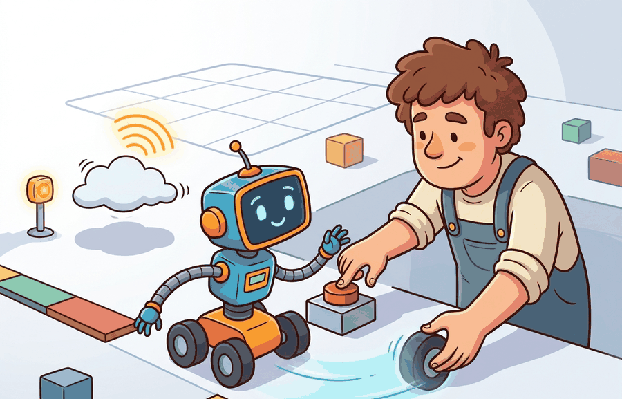

"A robot does not care which metric looked best in a slide deck. It cares which command arrives next."

Figure 54.5A: Section 54.5: Human override and safety testing is easier to reason about when the figure shows the concept, evidence path, and action consequence in one physical situation.
A Careful Control Loop
Big Picture
Human override and safety testing matters because human override must be engineered, tested, logged, and recoverable. The section treats evaluation, uncertainty, safety, and deployment as one closed-loop contract rather than as separate checklist items.
Problem First
A stop button that works only in a planned demo is not enough. Operators need authority, feedback, and a clear restart path.
The practical question is therefore specific: which observation arrives, which state estimate is trusted, which action is allowed, which monitor can interrupt it, and which artifact proves the claim afterward?
Same-Artifact Rule
Every compared number in this section should be co-computed by one script on one task panel, with one seed plan and one saved artifact. That artifact carries success, failure, latency, safety, and robustness fields together.
The evidence contract for Human override and safety testing keeps the observation, estimate, action, monitor decision, and result artifact in one traceable path.
Theory
Override design names who can stop, what state the robot enters, how energy is removed or limited, how the event is logged, and who approves restart.
A compact formal view is $e_i = (x_i, a_i, m_i, r_i, z_i)$, where $x_i$ is the episode context, $a_i$ is the action trace, $m_i$ is the monitor trace, $r_i$ is the result vector, and $z_i$ is the saved artifact id. The section metric is computed from the same set of $e_i$ records, not from a stitched collection of unrelated runs.
Mechanism
The mechanism is observe, estimate, choose, constrain, execute, monitor, log, and review. Each verb has an owner in the deployment architecture and a field in the evaluation artifact.
Worked Example
A lab assistant who presses stop during a bad grasp should see the robot enter a visible safe state and produce an incident record, not simply freeze with unknown torque.
The code below builds the evidence record before any model-specific claim is made. It is intentionally small so the metric and artifact contract are visible.
# Create a same-artifact evidence record for Human override and safety testing.
# The record keeps metrics, perturbations, and monitor state together.
from dataclasses import dataclass, asdict
import json
@dataclass
class EvidenceRecord:
section: str
panel: str
metric_contract: str
perturbation: str
monitor_state: str
artifact_id: str
record = EvidenceRecord(
section="54.5",
panel="fixed rollout panel, seeds 0 to 9",
metric_contract="override_latency_ms = command_received_time - hazard_detected_time",
perturbation="network loss, operator confusion, and simultaneous autonomy command",
monitor_state="normal, degraded, stopped, or recovery",
artifact_id="54_5_panel_v1.json",
)
print(json.dumps(asdict(record), indent=2))
Code Fragment 54.5.1 creates a same-artifact evidence record for Human override and safety testing, including the metric contract, perturbation panel, monitor state, and saved artifact id.
Expected output: the printed trace for Human override and safety testing should expose the method configuration, the measured evidence field, and the failure label. If one of those fields is missing or unchanged under the perturbation, the example is not yet an evaluation artifact.
Library Shortcut
The hand-built record is about 24 lines. In a production run, DVC, MLflow, Weights and Biases Artifacts, or a ROS 2 bag plus metadata file reduces the tracking code to a few calls while handling versioning, file storage, run ids, and reproducible retrieval. The hand-built version remains useful because it shows which fields the tool must preserve.
Practical Recipe
Write the observation, action, monitor, metric, and artifact fields before selecting a model.
Run a deterministic smoke test and one named perturbation from the panel.
Log success, safety events, latency, energy or resource use, and recovery status in the same row group.
Compare only methods evaluated by the same script on the same panel and seed plan.
Attach a short postmortem to each failed rollout so the artifact remains useful after the plot is forgotten.
Common Failure Mode
Human override is not a substitute for safe autonomy. It is a final control layer that must be reachable, tested, and logged.
Practical Example
An embodied AI team applying Human override and safety testing should review a single run folder containing configuration, model version, rollout traces, monitor transitions, video or sensor replay, and the metric table. The review asks whether the evidence supports the deployment decision, not whether one isolated number looks good.
Research Frontier
Shared-control research is making override more nuanced, with graded autonomy, operator intent prediction, and post-incident learning loops.
Self Check
Can you name the metric contract, perturbation panel, monitor state, and artifact id for Human override and safety testing? If any field is missing, the claim is not yet audit-ready.
Builder's Deep Dive
Human override and safety testing becomes operational when the metric is tied to a runtime interface. The interface names the sensor stream, state estimate, action representation, timing budget, safety or robustness monitor, and deployment artifact.
The disciplined habit is to separate three claims. The conceptual claim explains why the method should help. The systems claim explains which interface it changes. The evidence claim records which measurement would convince a skeptical builder.
Practical Tool Choices For This Section
Tool or Library
Role in Human override and safety testing
ROS 2 lifecycle
Implements stopped, inactive, active, and recovery states.
hardware emergency stop circuits
Provide independent physical stop authority.
incident review templates
Turn override events into reproducible safety improvements.
Create a JSON or Parquet artifact for five rollouts of Human override and safety testing. Include fields for configuration, seed, perturbation, metric values, monitor state, and a short failure label. Then rerun the same panel with one changed policy setting and verify that both methods can be compared row by row.
Failure Analysis Pattern
When Human override and safety testing fails, assign the failure to perception, state estimation, planning, control, timing, data coverage, monitor design, or evaluation hygiene. Then rerun one controlled perturbation that isolates the suspected cause.
A Useful Annoyance
If the artifact schema feels fussy, that is a good sign. It is cheaper for a spreadsheet to complain than for a robot to discover the missing field while moving.
Section References
Canonical support for Human override and safety testing: primary papers, official tool documentation, and chapter bibliography entries named in this part.
Use these sources to verify assumptions, implementation details, expected outputs, and evaluation artifacts.
Key Takeaway
Human override and safety testing is valuable when it changes the closed-loop decision and leaves behind evidence that another builder can audit.
Exercise 54.5.1
Design a same-artifact evaluation for this section. Specify the environment, rollout panel, seed plan, metric fields, monitor fields, one perturbation, and one rollback or recovery rule.
What's Next
The next section reuses the same artifact discipline while changing the failure mode or deployment interface under study.